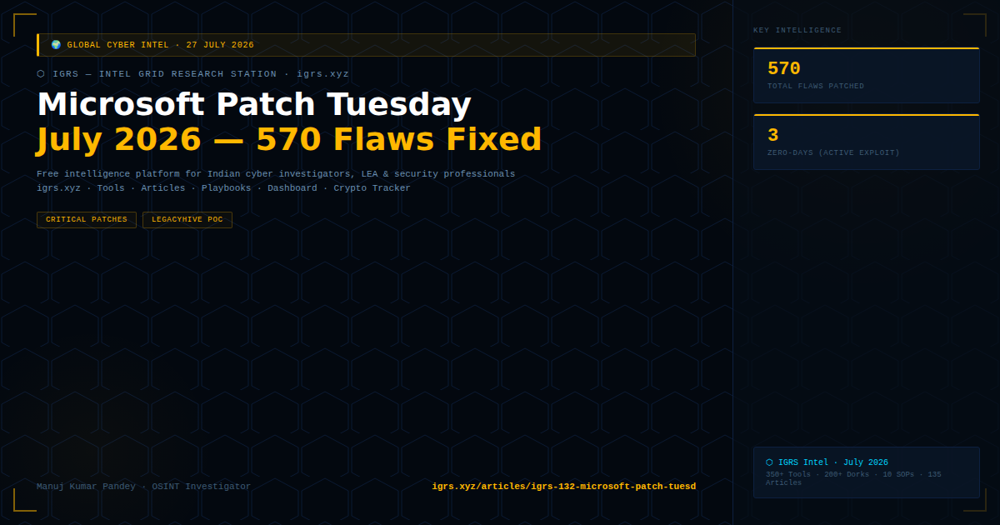

Microsoft's July 2026 Patch Tuesday addressed 570 security flaws — one of the largest single-month patch releases in Microsoft's history — including 3 actively exploited zero-day vulnerabilities. The release includes a critical Windows privilege escalation zero-day dubbed LegacyHive (discovered via PoC release by a security researcher hours after Patch Tuesday), alongside critical flaws in Windows, Office, Azure, and Exchange.
| CVE | Component | Type | Severity |
|---|---|---|---|
| LegacyHive (PoC) | Windows kernel | Elevation of Privilege | Critical |
| Zero-Day 2 | Windows CLFS | Privilege Escalation | Critical |
| Zero-Day 3 | Office/MSHTML | Remote Code Execution | Critical |
LegacyHive PoC note: A security researcher published a working proof-of-concept for LegacyHive (Windows elevation of privilege zero-day) within hours of July's Patch Tuesday. PoC availability dramatically shortens attacker weaponisation time — expect exploitation attempts within 24-48 hours of PoC publication.
| Category | Critical Flaws | Priority |
|---|---|---|
| Windows kernel/OS | Includes zero-days | 🔴 Patch immediately |
| Azure | Authentication bypass, data exposure | 🔴 High |
| Exchange Server | RCE vulnerabilities | 🔴 High (internet-exposed) |
| Office suite | Macro/document RCE | 🟠 High |
| Windows Defender | Bypass vulnerabilities | 🟠 High |
Indian organisations running Windows environments — including government departments, banks, hospitals — must prioritise patching the zero-day vulnerabilities immediately. CERT-In specifically advised organisations to apply Microsoft security updates as a mandatory action following Patch Tuesday releases of this scale.
CERT-In advisory: Apply Microsoft July 2026 patches immediately, particularly for systems with internet exposure. Prioritise Exchange Server, Azure-connected systems, and Windows Server environments. Test patches in staging, then deploy within 48 hours for critical systems.